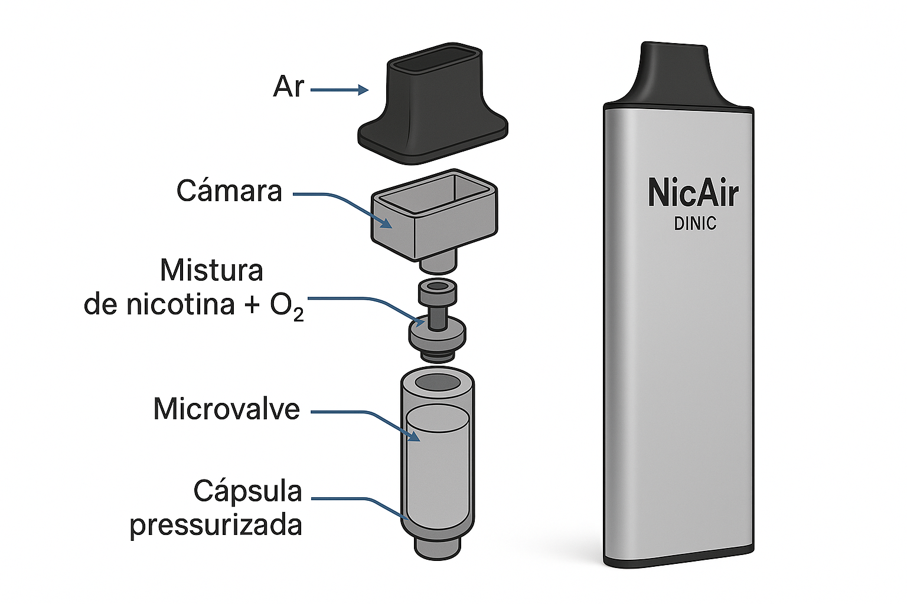

NicAir – Tecnologia DINIC
Sem combustão. Sem vapor. Apenas saciedade com segurança.
Sem combustão. Sem vapor. Apenas saciedade com segurança.

Dispositivo NicAir com tecnologia limpa e controlada
O NicAir é um dispositivo pressurizado de inalação de nicotina ativado por pressão negativa. Ao puxar pelo bocal, uma válvula interna libera uma microdose da solução de nicotina, que se mistura com o ar ambiente através de um microorifício lateral. O resultado é uma experiência sensorial semelhante ao trago do cigarro — sem calor, sem vapor, sem resíduos.

Vista interna do funcionamento – válvula, cápsula pressurizada e fluxo de ar
O protótipo final do NicAir está em fase de finalização. Com design discreto, cápsula pressurizada e selo DINIC, o produto foi pensado para unir tecnologia, controle de dose e segurança. Ideal para quem busca substituir o cigarro com responsabilidade e inovação.
Quero ser notificadoEmail: contato@nicair.com.br
Instagram: @nicair.dinic